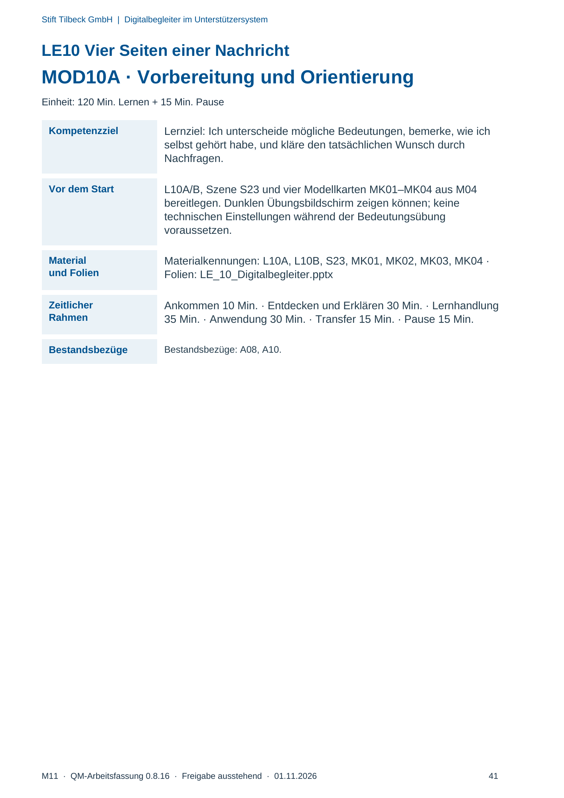
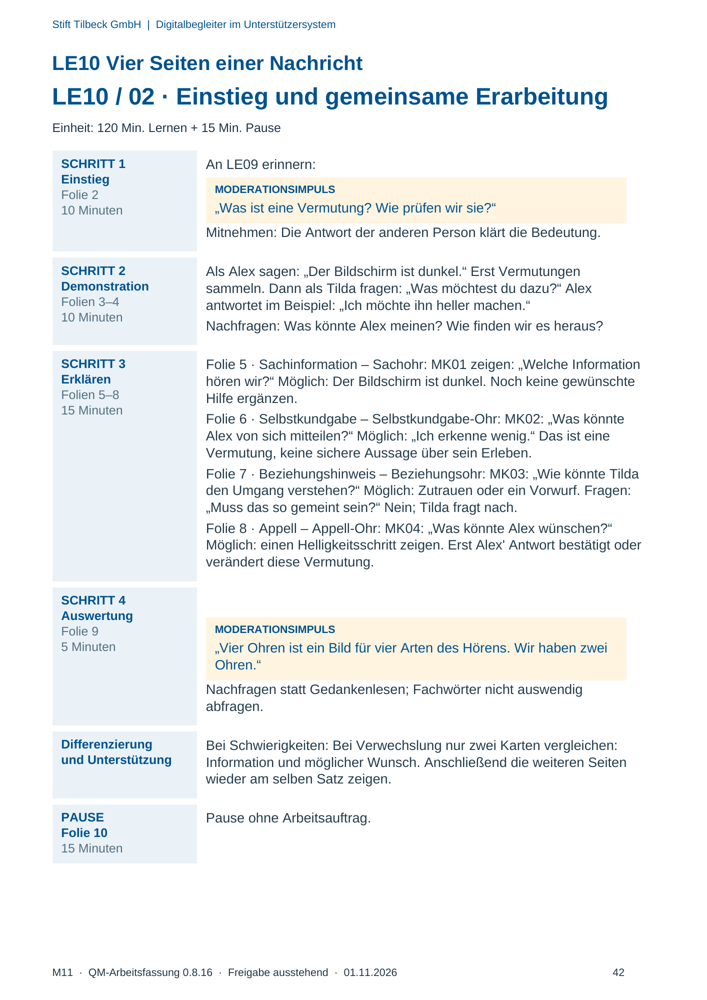
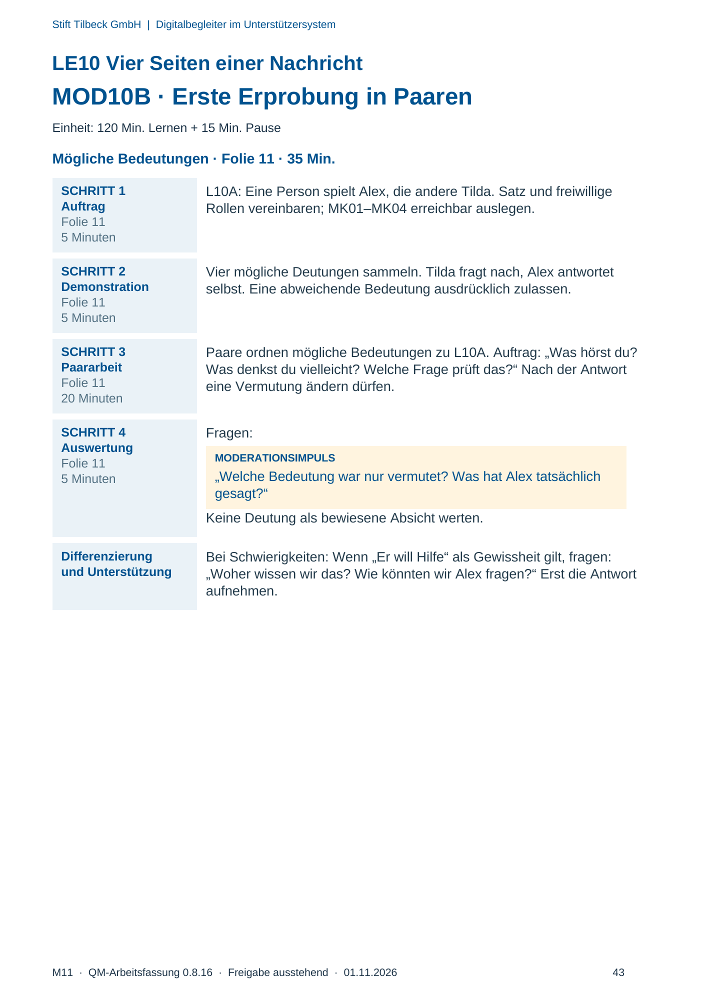
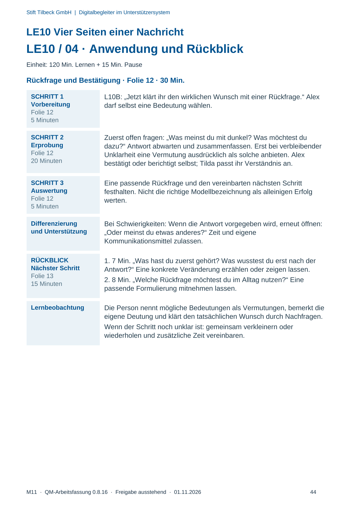

M11 · Originalseite 41, 42, 43, 44
Durchführungshilfe
Gezielte Original-Druckauswahl.
Fragen und Ankreuzfelder werden auf dem Ausdruck bearbeitet. Die Lesefassung speichert keine Antworten.
Lesefassung · Seite 41
Stift Tilbeck GmbH | Digitalbegleiter im Unterstützersystem
M11 · QM-Arbeitsfassung 0.8.16 · Freigabe ausstehend · 01.11.2026 41
LE10 Vier Seiten einer Nachricht
MOD10A · Vorbereitung und Orientierung
Einheit: 120 Min. Lernen + 15 Min. Pause
Kompetenzziel Lernziel: Ich unterscheide mögliche Bedeutungen, bemerke, wie ich
selbst gehört habe, und kläre den tatsächlichen Wunsch durch
Nachfragen.
Vor dem Start L10A/B, Szene S23 und vier Modellkarten MK01–MK04 aus M04
bereitlegen. Dunklen Übungsbildschirm zeigen können; keine
technischen Einstellungen während der Bedeutungsübung
voraussetzen.
Material
und Folien
Materialkennungen: L10A, L10B, S23, MK01, MK02, MK03, MK04 ·
Folien: LE_10_Digitalbegleiter.pptx
Zeitlicher
Rahmen
Ankommen 10 Min. · Entdecken und Erklären 30 Min. · Lernhandlung
35 Min. · Anwendung 30 Min. · Transfer 15 Min. · Pause 15 Min.
Bestandsbezüge Bestandsbezüge: A08, A10.
Originalseite ansehen

Lesefassung · Seite 42
Stift Tilbeck GmbH | Digitalbegleiter im Unterstützersystem
M11 · QM-Arbeitsfassung 0.8.16 · Freigabe ausstehend · 01.11.2026 42
LE10 Vier Seiten einer Nachricht
LE10 / 02 · Einstieg und gemeinsame Erarbeitung
Einheit: 120 Min. Lernen + 15 Min. Pause
SCHRITT 1
Einstieg
Folie 2
10 Minuten
An LE09 erinnern:
MODERATIONSIMPULS
„Was ist eine Vermutung? Wie prüfen wir sie?“
Mitnehmen: Die Antwort der anderen Person klärt die Bedeutung.
SCHRITT 2
Demonstration
Folien 3–4
10 Minuten
Als Alex sagen: „Der Bildschirm ist dunkel.“ Erst Vermutungen
sammeln. Dann als Tilda fragen: „Was möchtest du dazu?“ Alex
antwortet im Beispiel: „Ich möchte ihn heller machen.“
Nachfragen: Was könnte Alex meinen? Wie finden wir es heraus?
SCHRITT 3
Erklären
Folien 5–8
15 Minuten
Folie 5 · Sachinformation – Sachohr: MK01 zeigen: „Welche Information
hören wir?“ Möglich: Der Bildschirm ist dunkel. Noch keine gewünschte
Hilfe ergänzen.
Folie 6 · Selbstkundgabe – Selbstkundgabe-Ohr: MK02: „Was könnte
Alex von sich mitteilen?“ Möglich: „Ich erkenne wenig.“ Das ist eine
Vermutung, keine sichere Aussage über sein Erleben.
Folie 7 · Beziehungshinweis – Beziehungsohr: MK03: „Wie könnte Tilda
den Umgang verstehen?“ Möglich: Zutrauen oder ein Vorwurf. Fragen:
„Muss das so gemeint sein?“ Nein; Tilda fragt nach.
Folie 8 · Appell – Appell-Ohr: MK04: „Was könnte Alex wünschen?“
Möglich: einen Helligkeitsschritt zeigen. Erst Alex' Antwort bestätigt oder
verändert diese Vermutung.
SCHRITT 4
Auswertung
Folie 9
5 Minuten
MODERATIONSIMPULS
„Vier Ohren ist ein Bild für vier Arten des Hörens. Wir haben zwei
Ohren.“
Nachfragen statt Gedankenlesen; Fachwörter nicht auswendig
abfragen.
Differenzierung
und Unterstützung
Bei Schwierigkeiten: Bei Verwechslung nur zwei Karten vergleichen:
Information und möglicher Wunsch. Anschließend die weiteren Seiten
wieder am selben Satz zeigen.
PAUSE
Folie 10
15 Minuten
Pause ohne Arbeitsauftrag.
Originalseite ansehen

Lesefassung · Seite 43
Stift Tilbeck GmbH | Digitalbegleiter im Unterstützersystem
M11 · QM-Arbeitsfassung 0.8.16 · Freigabe ausstehend · 01.11.2026 43
LE10 Vier Seiten einer Nachricht
MOD10B · Erste Erprobung in Paaren
Einheit: 120 Min. Lernen + 15 Min. Pause
Mögliche Bedeutungen · Folie 11 · 35 Min.
SCHRITT 1
Auftrag
Folie 11
5 Minuten
L10A: Eine Person spielt Alex, die andere Tilda. Satz und freiwillige
Rollen vereinbaren; MK01–MK04 erreichbar auslegen.
SCHRITT 2
Demonstration
Folie 11
5 Minuten
Vier mögliche Deutungen sammeln. Tilda fragt nach, Alex antwortet
selbst. Eine abweichende Bedeutung ausdrücklich zulassen.
SCHRITT 3
Paararbeit
Folie 11
20 Minuten
Paare ordnen mögliche Bedeutungen zu L10A. Auftrag: „Was hörst du?
Was denkst du vielleicht? Welche Frage prüft das?“ Nach der Antwort
eine Vermutung ändern dürfen.
SCHRITT 4
Auswertung
Folie 11
5 Minuten
Fragen:
MODERATIONSIMPULS
„Welche Bedeutung war nur vermutet? Was hat Alex tatsächlich
gesagt?“
Keine Deutung als bewiesene Absicht werten.
Differenzierung
und Unterstützung
Bei Schwierigkeiten: Wenn „Er will Hilfe“ als Gewissheit gilt, fragen:
„Woher wissen wir das? Wie könnten wir Alex fragen?“ Erst die Antwort
aufnehmen.
Originalseite ansehen

Lesefassung · Seite 44
Stift Tilbeck GmbH | Digitalbegleiter im Unterstützersystem
M11 · QM-Arbeitsfassung 0.8.16 · Freigabe ausstehend · 01.11.2026 44
LE10 Vier Seiten einer Nachricht
LE10 / 04 · Anwendung und Rückblick
Einheit: 120 Min. Lernen + 15 Min. Pause
Rückfrage und Bestätigung · Folie 12 · 30 Min.
SCHRITT 1
Vorbereitung
Folie 12
5 Minuten
L10B: „Jetzt klärt ihr den wirklichen Wunsch mit einer Rückfrage.“ Alex
darf selbst eine Bedeutung wählen.
SCHRITT 2
Erprobung
Folie 12
20 Minuten
Zuerst offen fragen: „Was meinst du mit dunkel? Was möchtest du
dazu?“ Antwort abwarten und zusammenfassen. Erst bei verbleibender
Unklarheit eine Vermutung ausdrücklich als solche anbieten. Alex
bestätigt oder berichtigt selbst; Tilda passt ihr Verständnis an.
SCHRITT 3
Auswertung
Folie 12
5 Minuten
Eine passende Rückfrage und den vereinbarten nächsten Schritt
festhalten. Nicht die richtige Modellbezeichnung als alleinigen Erfolg
werten.
Differenzierung
und Unterstützung
Bei Schwierigkeiten: Wenn die Antwort vorgegeben wird, erneut öffnen:
„Oder meinst du etwas anderes?“ Zeit und eigene
Kommunikationsmittel zulassen.
RÜCKBLICK
Nächster Schritt
Folie 13
15 Minuten
1. 7 Min. „Was hast du zuerst gehört? Was wusstest du erst nach der
Antwort?“ Eine konkrete Veränderung erzählen oder zeigen lassen.
2. 8 Min. „Welche Rückfrage möchtest du im Alltag nutzen?“ Eine
passende Formulierung mitnehmen lassen.
Lernbeobachtung Die Person nennt mögliche Bedeutungen als Vermutungen, bemerkt die
eigene Deutung und klärt den tatsächlichen Wunsch durch Nachfragen.
Wenn der Schritt noch unklar ist: gemeinsam verkleinern oder
wiederholen und zusätzliche Zeit vereinbaren.
Originalseite ansehen
